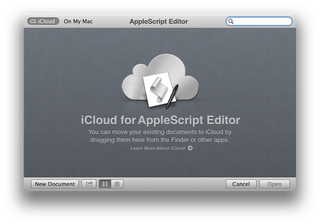
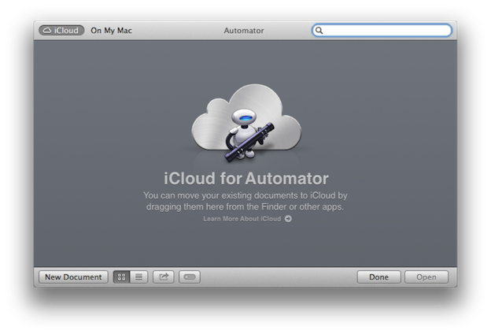

|
If you have the same apps set up to use iCloud on more than one computer, iCloud can keep your documents and data up to date in those apps across all your computers. In OS X v10.9 or later, when you create or change documents using the AppleScript Editor or Automator applications, iCloud can keep the scripts, workflows, and applets up to date in those editors on your other Macs. |
iCloud “Documents in the Cloud” support has been added to both the AppleScript Editor and Automator applications.
As with other Apple applications, users can store their automation documents, including AppleScript scripts, applets, droplets, and Automator workflow files and applets, to the document storage area provided with their Apple iCloud accounts. Use of this service ensures that your favorite automation tools can easily be shared across all of your Apple laptop and desktop computers.
Activating Documents in the Cloud
Documents in the Cloud support in the AppleScript Editor and Automator applications is automatically activated when you enable the Documents in the Cloud checkbox within the iCloud system preference pane:
AppleScript Editor
With Documents in the Cloud enabled, the Open dialog in the AppleScript Editor application will display the standard iCloud interface. You can drag script files, applets, and droplets, into this dialog to add them to your iCloud storage area. Conversely, you may drag items from this dialog to the desktop to add them to your local computer storage.

Automator
With Documents in the Cloud enabled, the Open dialog in the Automator application will display the standard iCloud interface. You can drag workflow file and applets into this dialog to add them to your iCloud storage area. Conversely, you may drag items from this dialog to the desktop to add them to your local computer storage.
